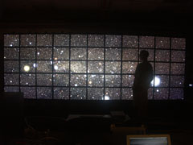
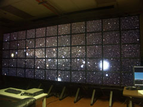
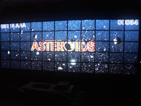
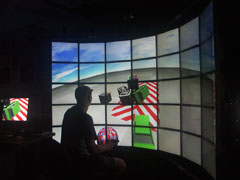
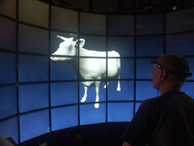

||| O o Electro -
Electro is an application development environment designed for use on both cluster-driven tiled displays and desktop systems. Electro is based on the MPI process model and is bound to the Lua programming language. With support for 3D graphics, 2D graphics, audio, and input handling, Electro provides an easy-to-use scripting system for interactive applications spanning multiple processors and displays. Electro supports Linux, Windows 2K/XP, and Mac OS X.
The source code is made available under the terms of the GNU General Public License. Building this source requires the libraries and header files for Lua 5.1, SDL, PNG, JPEG, ODE, FreeType2, and Ogg Vorbis. A makefile is included for Linux and OS X. A Visual Studio project file is included for Windows.
An anonymous Subversion repository is may be found at:
Check out source using your favorite SVN client. Use the command line client as follows.
svn co https://s.snth.net/svn/rlk/electro/trunk electro
The galaxy data package is necessary to run the Asteroids and Vortex demos. The contents of this package must be placed in electro/examples/data. This ZIP file is approximately 30MB in size:
This Electro intro package includes a set of four simple scripts that follow the iterative creation of an Electro application. It begins with a basic scene, adds a scene hierarchy, makes the scene interactive, and adds an intelligent camera. All assets are included, as is an example display configuration.
Complete documentation including a brief tutorial is available here and is also included in the source package.
An Electro discussion group has been formed at Google Groups:
http://groups.google.com/group/electro-users
There are 5 demo applications included in the source and binary packages: Asteroids, Driving, ViewOBJ, Vortex, and Fifteen.
Electro takes a list of Lua scripts on the command line. Each script is executed in turn.
$ electro demo.lua
Under Windows, Lua scripts may be dragged-and-dropped onto electro.bat, or electro.exe may be run from the command line:
C:\> electro.exe demo.lua
At EVL, Electro is installed globally on nico. Run it in standalone mode as above, or in cluster mode by invoking the nico run script electro-nico:
$ setenv PATH ${PATH}:/usr/local/Electro/bin
$ cd /usr/local/Electro/examples
$ electro-nico11x5 demo.lua
|  | Here Total Perspective Vortex is shown running on the 100-megapixel display, a 11×5 array of 1600×1200 pixel LCDs. |
|  | Another shot of Total Perspective Vortex, showing a bit of the structure of the display. |
|  | This is Asteroids on the 100-megapixel display. |
|  | This shot shows the Driving demo running on the Varrier autostereoscopic virtual reality display. |
|  | Here is ViewOBJ displaying Mrs. O'Leary's test model on the Varrier. |
Electro requires GL_ARB_vertex_program, GL_ARB_fragment_program, and GL_ARB_point_sprite to render stars correcly. An NVIDIA GeForce FX (or better) or ATI Radeon 9600 (or better) is necessary. Electro will run without these features, and demos will work correctly, but stars will appear as tiny dots.
rlk (at) evl.uic.edu
{kind=link}
{kind=link}
{kind=link}
{kind=link}
{kind=link}